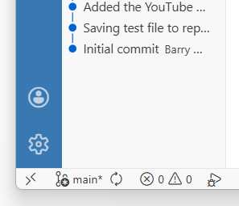
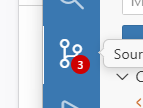

Introduction to Positron and AI
Sections:
What is the Positron IDE?
The positron IDE is a new integrated development environment (IDE) designed for data science and programming in R and Python. It is developed by Posit, the company behind RStudio, and aims to provide a modern, efficient, and AI-powered coding experience for data scientists and programmers.
The Positron IDE offers a range of features, including: - A sleek and intuitive user interface that is designed to enhance productivity and ease of use. - Support for both R and Python programming languages, allowing users to work with their preferred language in a single environment. - AI-powered code completion and suggestions, which can help users write code faster and with fewer errors. - Integration with GitHub for version control and collaboration. - A built-in terminal for running commands and scripts directly within the IDE.
Note: The user intface has clear roots in RStudio, but has a very large number of changes.
Installation and Set-up::
Check Prerequisites:
Before installing Positron, ensure that your system meets the following requirements
Operating System: Windows 10 or later, macOS 10.15 or later, or a recent Linux distribution.
Hardware: A modern computer with at least 8 GB of RAM and a multi-core processor is recommended for optimal performance.
Software: Ensure that you have the latest version of R and Python installed on your system, as Positron relies on these languages for its functionality.
Note: I found out that intalling Pyrefly worked better.
Download and Install Positron for Windows (or other systems)
In the middle of the Welcome page (https://positron.posit.co/welcome.html) has options such as:
Get Started (download/install)
Explore Features
Customize your IDE
Set up your environment
Migrate from RStudio
Migrate from VS Code.
User Interface Overview:
One new major feature is the Command Palette, which allows you to quickly access various commands and features within the IDE. You can open the Command Palette by pressing
Ctrl + Shift + P(orCmd + Shift + Pon macOS) and then typing the command you want to execute. This feature is designed to enhance productivity and make it easier to navigate the IDE. Note: you frequently have to search for the command that you want.A second feature is the left sidebar, which has a series of icons:
File Explorer: allows you to navigate and manage your project files and folders.
GitHub: provides integration with GitHub for version control and collaboration.
Search: allows you to search for files, symbols, and text within your project.
Extensions: allows you to browse and install extensions to enhance the functionality of the IDE.
Settings: provides access to various settings and preferences for customizing your IDE experience.
AI Assistant: provides access to AI-powered features such as code completion, suggestions, and more. You can interact with the AI Assistant to get help with coding tasks, generate code snippets, and receive recommendations for improving your code. This will appear once you have set up the AI Assistant with a source software (e.g., Claude AI).
Setting up GitHub Integration::
This works similarly to RStudio, but with a different interface. You can connect your GitHub account to Positron and manage your repositories directly from the IDE. This allows you to easily commit changes, push updates, and collaborate with others on your projects. - Open Folder to open an existing Git repository that you already have locally - New Folder from Template to create a new folder locally, with the option to initialize it as a Git repository - New Folder from Git to clone an existing Git repository from a remote source like GitHub -
- You can use the button in the lower left corner to set up a connection with Github and sign into Github:

Alternatively, you can use the Command Palette to search for GitHub-related commands, such as “GitHub: Sign In” or “GitHub: Clone Repository,” to set up your GitHub integration.
To clone a repository, you can use the “GitHub: Clone Repository” command in the Command Palette, which will prompt you to enter the URL of the repository you want to clone. Once you provide the URL, Positron will handle the cloning process and set up the repository in your local environment.
To publish local work to GitHub, you can use the “GitHub: Publish Repository” command in the Command Palette. This will allow you to create a new repository on GitHub and push your local changes to it directly from the IDE.
The left sidebar also provides a GitHub icon that you can click to access your repositories, view changes, and manage your GitHub integration more easily:

Setting up the AI Assistant:
To set up the AI Assistant in Positron, you can follow these steps:
Enable the setting positron.assistant.enable in the settings menu (gear at the bottom of the left sidebar). This will allow you to access the AI Assistant features within the IDE.
Restart Positron or run the Developer: Reload Window command in the Command Palette. This will ensure that the changes take effect and the AI Assistant is properly initialized.
Which AI Assistant you can use depends on the source software you choose to connect with. Positron currently supports integration with several AI platforms, including OpenAI’s GPT-3, Anthropic’s Claude, and others. You can select your preferred AI Assistant from the settings menu and follow the prompts to connect it to your Positron IDE.
The page Positron Assistant - Getting Started provides detailed instructions on how to set up the AI Assistant with different source software options, including how to obtain API keys and configure the connection settings.
For Anthropic’s Claude, you will need to create an account on the Anthropic website and obtain an API key. Once you have the API key, you can enter it into the Positron settings to connect the AI Assistant to Claude.
You can edit your environment variables to add the ANTHROPIC_API_KEY, just as in R/RStudio. This will allow you to use the AI Assistant with Claude without having to enter the API key directly into the Positron settings.
Alternatively, you can choose to connect with Anthropic’s Claude by obtaining an API key from the Anthropic website and entering it into the Positron settings:
Run the command Positron Assistant: Configure Language Model Providers in the Command Palette. This will open the configuration settings for the AI Assistant.
For OpenAI’s GPT-3, you will need to create an account on the OpenAI platform and obtain an API key. Once you have the API key, you can enter it into the Positron settings to connect the AI Assistant to GPT-3, same as for Anthropic’s Claude.
For other AI platforms, you can follow the specific instructions provided in the Positron documentation for connecting to those platforms. The process typically involves obtaining an API key from the respective platform and entering it into the Positron settings to establish the connection.
Once connected, you can start using the AI Assistant to get code suggestions, generate code snippets, and receive help with your coding tasks directly within the IDE.
Using the AI Assistant:
When you have set up the Assistant, you will see this icon near the bottom of the left-hand sidebar:
Clicking on it will open a ‘Chat’ pane on the left hand side. At the bottom will be a window to enter prompts. It will have a button showing what language it’s thinking of (R or Python).
At that point you can use the AI by manually entering prompts, or by seeing the suggestions it enters as you type. You can hit ‘tab’ to accept them, or just keep typing.
Sources and References
YouTube Videos:
Installlation and set-up of Positron IDE:
AI features in Positron:
Websites, Blogs and Documentation:
Positron Tutorials (Posit) - an R package of tutorials!
[Troubleshooting (Posit)] (https://positron.posit.co/troubleshooting.html)
Other Resources: